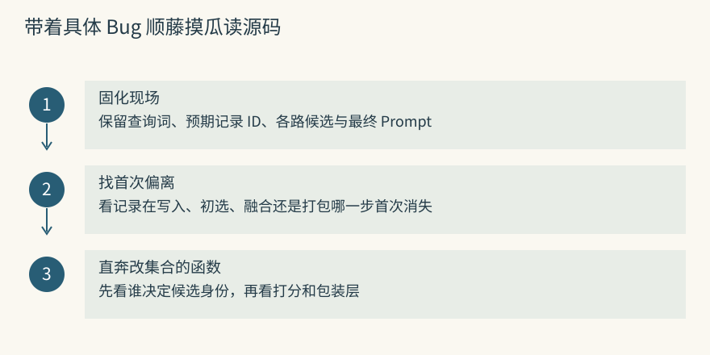
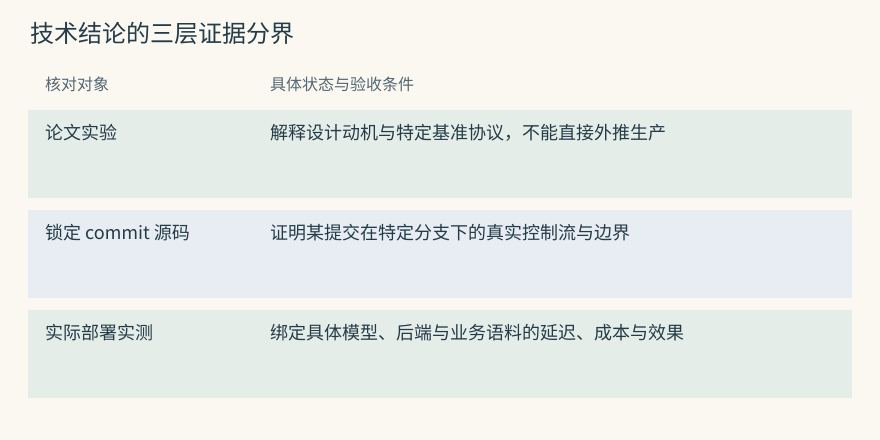

源码与论文索引
带着一个具体 Bug 去读源码，而不是从第一行顺着往下啃
开源记忆项目动辄几万行代码，从 README 跳进 src/ 从头翻到尾，看三天也抓不住重点。
最高效的源码读法，是手里攥着一个已经复现的真实 Bug——比如：“payment-gateway 查 PAY-409 时漏了关键复盘，它到底是在写入丢了、初选池外丢了、排序压下去了，还是组装打包切掉了？”

然后只做三步：
- 用
rg直奔改变数据集合的核心函数，先跳过一堆配置继承和日志包装代码：rg -n 'def (_search_vector_store|_add_to_vector_store|score_and_rank)' \ sources/repos/mem0/mem0/memory/main.py sources/repos/mem0/mem0/utils/scoring.py - 用纸笔盯住三个集合的身份变化：
比如向量初选捞出
{R2, R8}，全文捞出{R5, R2}，目标记录是R5。进函数体一眼就能看穿：如果循环遍历的是semantic_results，R5根本没拿到入场券；如果先建了 UUID 并集字典，集合就会变成{R2, R5, R8}。先看谁改集合成员，再看打分公式！ - 对照论文、源码和实测，三层证据绝不混用：
- 论文解释设计动机和特定学术实验协议；
- 锁定 commit 的源码证明某个分支在默认配置下的真实控制流；
- 你自己的实际部署实测才能证明在你业务语料、模型和后端上的真实延迟与效果。
关键源码直达入口（Mem0 & Graphiti 速查）
想亲手复核全书最核心的两条对照实现，直接顺着这几个已按 2026-11 快照核验过的入口读：
- Mem0（
fff8a6472512，2026-11-18）：- 写入与检索主编排：mem0/memory/main.py（核对同步 ADD-only 分阶段追加、
infer=False与procedural_memory） - 池内加分与 BM25 Sigmoid 归一化：mem0/utils/scoring.py（核对
semantic_results遍历与语义threshold硬门槛） - 历史表与消息持久化：mem0/memory/storage.py（核对删除时写回
prev_value与历史审计结构）
- 写入与检索主编排：mem0/memory/main.py（核对同步 ADD-only 分阶段追加、
- Graphiti（
9b8a46300920，2026-11-20）：- 写入编排、
SagaNode与删源重建：graphiti_core/graphiti.py（核对add_episode()与 2026-11 升级后的remove_episode()） - 边去重与双时间冲突裁决：graphiti_core/utils/maintenance/edge_operations.py
- 边字段与时间过滤：graphiti_core/edges.py、graphiti_core/search/search_filters.py
- 混合搜索、配方与
rank_const=1RRF：graphiti_core/search/search.py、graphiti_core/search/search_config_recipes.py、graphiti_core/search/search_utils.py
- 写入编排、
全书 16 个开源仓库与 11 篇核心论文完整清单（选读）
16 个开源项目源码入口（2026-11 核验）
以下路径均已核对 2026-11 最新快照（11 个活跃仓同步至 2026-11-09 ~ 2026-11-21，5 个静态/归档仓保留原快照）；在电子书静态站点中点击源码链接会自动跳转到对应锁定 commit 的 GitHub 页面：
| 项目 | 锁定日期 | 优先阅读的核心入口 | 归档许可提示 |
|---|---|---|---|
| Mem0 | 2026-11-18 | mem0/memory/main.py、mem0/utils/scoring.py、mem0/memory/storage.py |
Apache-2.0 |
| Graphiti | 2026-11-20 | graphiti_core/graphiti.py、graphiti_core/search/search_utils.py |
Apache-2.0 |
| Letta Code | 2026-11-21 | src/agent/prompts/letta_root_memfs.md |
Apache-2.0 |
| Cognee | 2026-11-20 | cognee/api/v1/remember/remember.py、cognee/api/v1/recall/recall.py、cognee/modules/improve/stages.py |
Apache-2.0（按模块复查） |
| MemOS | 2026-11-09 | src/memos/mem_cube/general.py、src/memos/mem_scheduler/base_mixins/queue_ops.py |
Apache-2.0 |
| Hippo Memory | 2026-11-21 | src/entry/memory.ts、src/entry/sleep.ts、src/domain/search/hybrid.ts、src/domain/graph/recall.ts |
MIT |
| MCP Memory Service | 2026-11-20 | src/mcp_memory_service/storage/mixins/hybrid.py、src/mcp_memory_service/consolidation/consolidator.py |
Apache-2.0 |
| Basic Memory | 2026-11-20 | src/basic_memory/markdown/entity_parser.py、src/basic_memory/services/context_service.py |
AGPL-3.0 |
| Agent Beacon | 2026-11-20 | README.md、docs/、各宿主 collector 入口 |
MIT |
| TencentDB Agent Memory | 2026-11-19 | MemoryCore/src/core/record/l1-dedup.ts、MemoryCore/src/core/skill/skill-versioning.ts |
MIT |
| Hermes Jev Skills | 2026-11-12 | jevkit/rerank.py、jevkit/search.py、jevkit/memo.py |
MIT |
| HippoRAG | 2026-09-03 | src/hipporag/HippoRAG.py |
以归档仓库为准 |
| MemoryOS | 2026-07-07 | memoryos-pypi/updater.py、mid_term.py、retriever.py |
以归档仓库为准 |
| Memobase | 2026-01-11 | src/server/api/memobase_server/controllers/buffer.py |
Apache-2.0 |
| A-MEM | 2025-12-12 | agentic_memory/memory_system.py |
MIT |
| 历史 Letta | 2026-09-10 | 仅保留作仓库迁移与早期 V1 协议历史对照 | Apache-2.0 |
11 篇核心论文清单
| 论文编号 | 作者与核心贡献 | 对应阅读重点 |
|---|---|---|
arXiv:2310.08560 |
Packer 等，MemGPT | 有限上下文窗口中的虚拟上下文与主动换入控制 |
arXiv:2402.17753 |
Maharana 等，LoCoMo | 长程多会话对话记忆基准与评测协议 |
arXiv:2405.14831 |
Gutiérrez 等，HippoRAG | 基于知识图谱与 PPR 的神经生物学启发多跳联想检索 |
arXiv:2410.10813 |
Wu 等，LongMemEval | 拆解信息抽取、多会话推理、时间更新与拒答的长期基准 |
arXiv:2501.13956 |
Rasmussen 等，Zep / Graphiti | 面向动态 Agent 的双时间知识图谱架构 |
arXiv:2502.12110 |
Xu 等，A-MEM | 卡片盒启发的动态笔记描述与邻接网络演化 |
arXiv:2502.14802 |
Gutiérrez 等，HippoRAG 2 | 从 RAG 迈向非参数持续学习（事实记忆、理解与联想） |
arXiv:2504.19413 |
Chhikara 等，Mem0 | 生产级可扩展对话事实记忆系统设计 |
arXiv:2505.24478 |
Markovic 等，Cognee | 知识图谱与大模型上下文接口优化 |
arXiv:2506.06326 |
Kang 等，MemoryOS | 面向 AI Agent 的短/中/长期分页与热度提升记忆操作系统 |
arXiv:2507.03724 |
Li 等，MemOS | 统一调度明文、激活与参数化记忆的操作系统架构 |
动手检查
如果有人在技术评审会上宣称“我们选的这套记忆框架能够持续自我学习”，请你把这句模糊宣传拆成一个可证伪、可复现的工程验证问题，并列出至少一个中间状态检查点和一个最终验收结果。
答案提示：把它改写为具体可失败的题——“当 payment-gateway 的发版规程修订并写入/提交后，下一次全新会话的 Prompt 是否确实编译或检索到了新版本正文，并且拦住了缺幂等键的配置？同时当旧版含敏感信息的原始记录被删除后，向量、图摘要、历史表和缓存里是否彻底查不到残留？”中间状态查写入版本、检索候选集合与 packed_ids，最终结果查真实工具拦截行为与负面删除搜索；光看文档里有个 improve() 或 delete() 方法名绝不能算通过。

跨项目复核入口（选读）
本章对照结论
| 评审要追问的核心问题 | 进源码必须盯住的状态 | 典型核对入口 | 不能偷换的概念 |
|---|---|---|---|
| 原话最后变成了什么 | 候选文本、限定词与来源映射 | Mem0、Memobase、Graphiti | 格式合法 ≠ 语义忠实 |
| 为什么关键记录没被搜到 | 各路原始候选集合与池边界 | Mem0、Graphiti、MCP、HippoRAG | 名字都叫 hybrid ≠ 候选并集 |
| 旧规程什么时候退场 | 有效区间、显式替代与版本号 | Graphiti、Hippo、Letta、MemoryOS | 热度下降 ≠ 现实失效 |
| 删除到底有没有清干净 | 主库、历史表、摘要、Git 与备份 | Mem0、Graphiti、Basic、MemOS | 调了 delete ≠ 隐私擦除完成 |
| 记忆有没有真帮上业务 | packed_ids、工具调用与无记忆对照 |
宿主组装器 + 业务回归集 | 检索 Recall 高 ≠ 任务成功率高 |